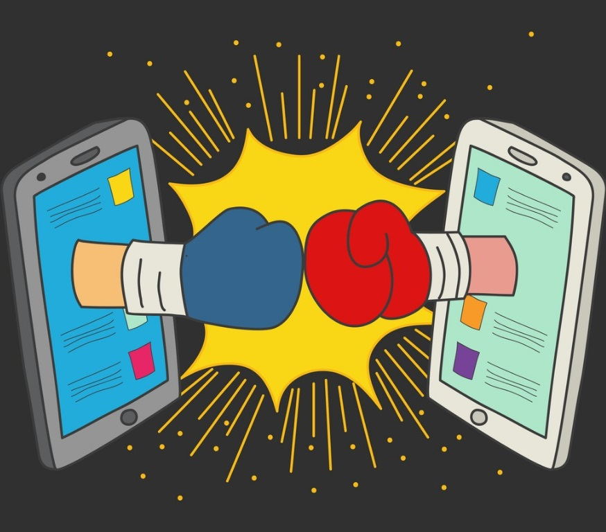

The Good
&
The Bad
It allows for multiple conversations to happen. This is most commonly seen with messaging centered apps like messenger. This is a great addition as it allows for efficient use of time. In work, family, or friendships.


ICT may give you easy access to the people you cherish in life but it also gives easy access to
the people you want to keep away from to you. Cyberbullying is a very real thing as well as a
plethora of insults by the online community if you manage to gain the ire of a crowd.